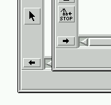
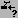

Manual
Graph Editor Icons
The graph editor icons appear on the icon bar of the uDraw(Graph) base window. To switch between the standard icons and the graph editor icons, simply click on the arrow in the lower part of the icon bar.

Arrows to switch the icon bar
The graph editor icons are short-cuts for the most frequently used menu operations of the graph editor, so pressing an icon is the same as selecting the corresponding menu operation. The following list shows the available icons and the corresponding menu operations.
- Edit/Node/Insert Root (or "Insert Child" if nodes are selected)
- Edit/Node/Delete Nodes
-  Edit/Node/Attributes...
- Edit/Edge/Insert Edge
- Edit/Edge/Delete Edge
- Edit/Edge/Attributes...
- Edit/Toggle Drag & Drop
Copyright © 2005, Universität Bremen. All rights reserved.